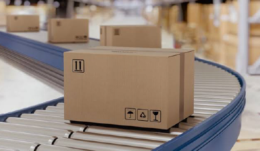
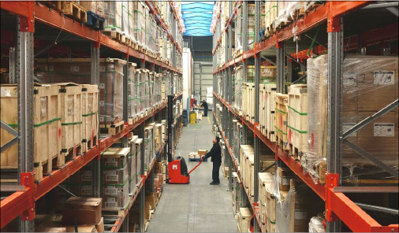
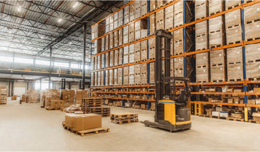
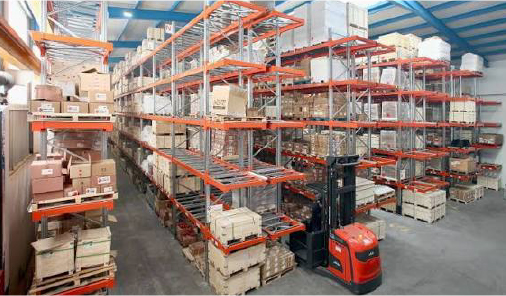
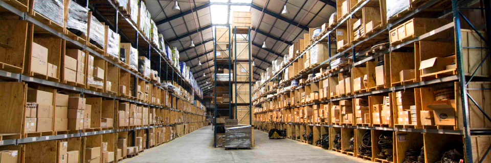

i-WMS
Warehouse Intelligence Por IXACTUS
40K+
Características IXACTUS
100%
Web - SaaS - On-Premise
25
Soluciones Integrables
90%
Reducción de Costos
Multi
Idiomas Globales
i-WMS
Características IXACTUS
Web - SaaS - On-Premise
Soluciones Integrables
Reducción de Costos
Idiomas Globales

Ventajas Competitivas
Obtén la ventaja competitiva con un sistema de gestión de almacénes que se adapta a tu forma única de trabajar: sin restricciones, sin gastos ocultos, con la profundidad técnica que exige la industria moderna.
Se adapta a la forma única de trabajar de tu empresa,
uniendo los ciclos operativos a un ciclo tecnológico personalizado.
No impone flujos rígidos - se ajusta a ti.
SaaS 100% web, On-Premise o híbrido. Tu eliges donde residen tus datos y como escalas.
Implementación ágil, sin tiempos de espera.
Control de almacénes, subalmacénes y centros de distribución.
Ubicación GPS, límites de coubicación, perfiles de operación de usuarios.
Gestion unificada de múltiples sitios.
Manejo de productos, fichas técnicas, 6 clasificaciones, códigos de barra, kits y bundles.
Listas de precio para reportes de valoración de inventario.
Control granular de existencias.
Crea la distribucion del almacen: pasillos, sentidos, tracks, estaciones, posiciones,
dimensiones de coubicacion, capacidad de carga, cuartos frios.
Definicion completa de la estructura fisica.
Etiquetas RF, Barcode o Bluetooth para identificacion de items.
Cualquier tablet o dispositivo móvil para operar.
Control de kardex extensible por producto.
Unidades de equivalencia, tipos de rack, etiquetas personalizadas.
Controla cada movimiento hacia el almacen, desde el almacen y entre almacenes,
subalmacenes y centros de distribucion. Control de surtido.
Movimientos en tiempo real.
Multiples reportes y tableros de control de consumo, desplazamientos,
capacidad del almacen, hasta valoracion de inventario y reportes de inteligencia.
Análisis de tendencias y proyecciones.
Conecta con dispositivos hardware: tablets, handhelds, lectores RF,
etiquetas Bluetooth.Garantizando eficacia y rapidez en la operacion del almacén.
Inventario al minuto con escáner integrado.
iWMS gestiona operaciones en almacenes, subalmacenes y centros de distribución de cualquier tamaño y complejidad - desde depósitos pequeños hasta hubs logísticos multilínea.




Comparacion de Mercado
Una mirada honesta a las diferencias entre iWMS de IXACTUS y las principales soluciones WMS del mercado global: SAP EWM, Oracle WMS, Manhattan Active, Blue Yonder e Infios.
| Capacidad | SAP EWM | Oracle WMS | Manhattan Active | Blue Yonder | iWMS · IXACTUS |
|---|---|---|---|---|---|
| Costo de implementación | Alto (>$200K USD) | Alto (>$150K USD) | Alto (>$200K USD) | Alto (>$180K USD) | Accesible - Despliegue rápido |
| Tiempo de despliegue | 6-18 meses | 6-12 meses | 4-12 meses | 4-12 meses | 100% web - Implementación ágil |
| SaaS / Web nativo | Limitado | Cloud opcional | Sí (Cloud-first) | Principalmente on-premise | 100% Web - SaaS desde el día 1 |
| On-Premise / Hibrido | Sí | Sí | Cloud prioritario | Sí | SaaS - On-Premise - Híbrido |
| Multialmacenes & CPT | Avanzado | Avanzado | Avanzado | Avanzado | 100% Web SaaS - Gestión unificada |
| Integración ERP | SAP S/4HANA nativo | Oracle Fusion Cloud | Nativo + APIs | Múltiples ERPs | SAP - Oracle - NetSuite - Custom |
| UX para operadores | Funcional, densa | Potente, compleja | Moderna, intuitive | Intuitiva | Diseno logístico, operación intuitiva |
| Automatización y Robotics | Ecosistema certificado | AS / RSC admitido | Capa nativa de robots | Avanzado | Dispositivos móviles + hardware integrado |
| Escalabilidad | Enterprise | Enterprise | Cloud-native | Enterprise | SaaS elástico + On-Premise |
| Modelo de licenciamiento | Licencias perpetuas + mantenimiento | Suscripción premium | SaaS escalable | SaaS premium | SAS - tarifa fija mensual, n usuarios |
| Time-to-Value | 12-24 meses | 6-18 meses | 6-9 meses | 4-12 meses | Despliegue ágil, valor inmediato |
La diferencia es clara:
iWMS de IXACTUS ofrece despliegue ágil, costos accesibles
y una experiencia 100% web desde el primer día - con la profundidad técnica de un sistema enterprise
y la flexibilidad de una plataforma moderna.
Mientras competidores como SAP EWM e Oracle WMS exigen inversiones mayores a $200K USD y 12-24 meses de implementación,
iWMS entrega valor inmediato con un modelo SAS de tarifa fija mensual
y libertad de despliegue SaaS, On-Premise o Híbrido.

Despliegue Flexible
iWMS se despliega en la nube (SaaS 100% web), en tus servidores (On-Premise) o en modelos híbridos.
Tu eliges donde corren tus datos y como escalas.
Implementación ágil desde el primer día, sin tiempos de espera ni inversiones masivas de infraestructura.
Acceso desde cualquier navegador, sin instalación de clientes. Actualización centralizada, seguridad gestionada por IXACTUS. Ideal para operaciones distribuidas y acceso remoto.
Instalación en tus servidores. Control total de la infraestructura, datos en tu datacenter, ideal para regulaciones estrictas y operaciones que requieren soberanía de datos.
Combina lo mejor de ambos mundos: SaaS para accesibilidad global y On-Premise para procesos críticos. Tu diseñas la arquitectura que mejor se adapta a tu operación.
Integración
iWMS se integra nativamente con los sistemas ERP, plataformas de compras, navegadores de e-commerce y tools de inteligencia artificial más utilizados en la industria. Una sola capa de datos, cero redundancia.
Integracion nativa con SAP EWM y los modulos MM, SD, PP. Sincronizacion bidireccional de inventarios, compras y ventas. Compatibilidad con SAP S/4HANA y SAP ECC.
Conexión con Oracle Fusion Cloud SCM, Oracle WMS Cloud y NetSuite ERP. Gestión unificada de pedidos, inventario y almacén en un solo flujo operativo.
iWMS es parte de la plataforma IXACTUS: ERP + CRM Inteligentes, inteligencia artificial, costeo, compras, ventas, facturación,inventarios, manufactura y cobros intelligence - todo en una sola solución unificada.
Integracion con Shopify, Magento, Amazon, Mercado Libre y otros marketplaces. Automatiza picking, packing y shipping para e-commerce con visibilidad en tiempo real del inventario.
Conexión con sistemas de gestion de transporte (TMS) y carriers. Coordina entregas, genera guías y controla el cierre de pedidos con trazabilidad completa.
Conecta tablets, handhelds, lectores RF, etiquetas Bluetooth, dispositivos IoT y robots de almacén. Inventario al minuto, control de kárdex y movimientos en tiempo real.